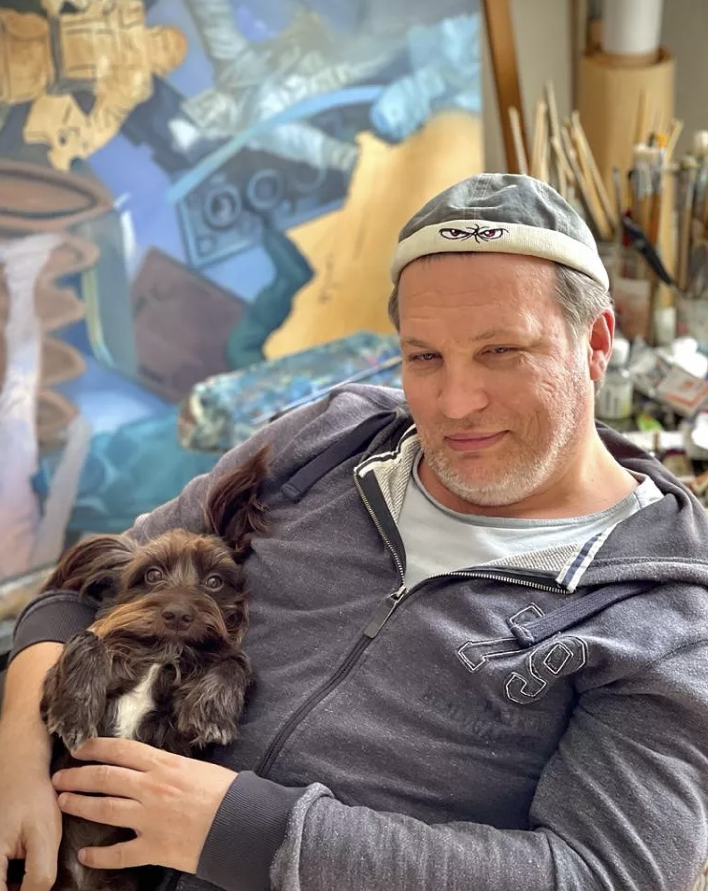
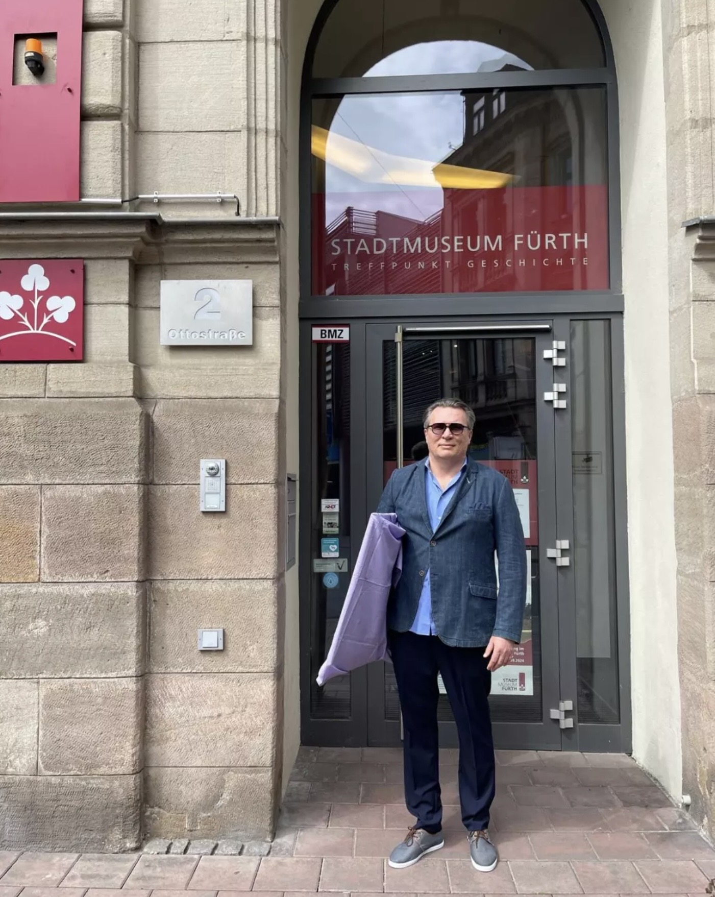
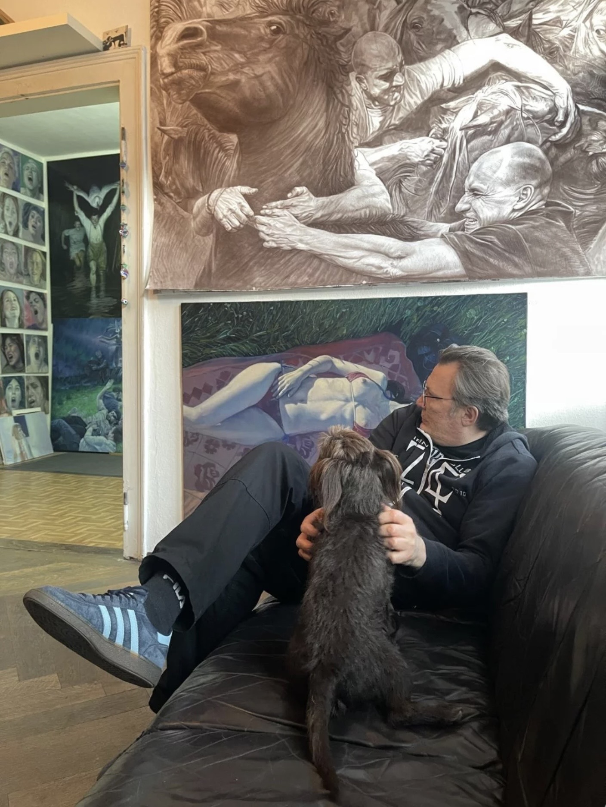
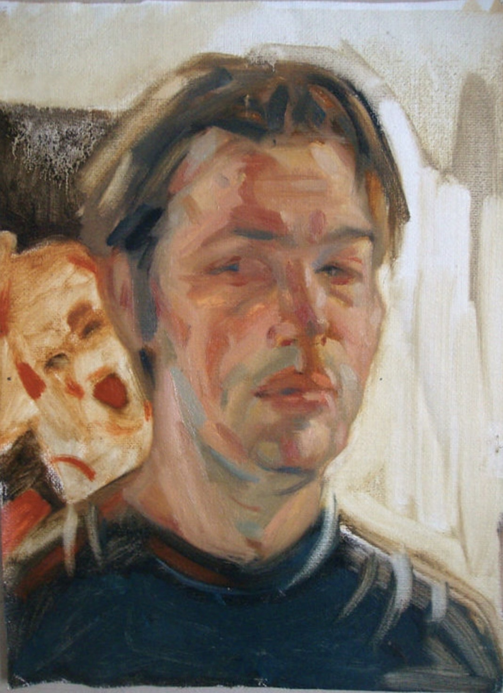
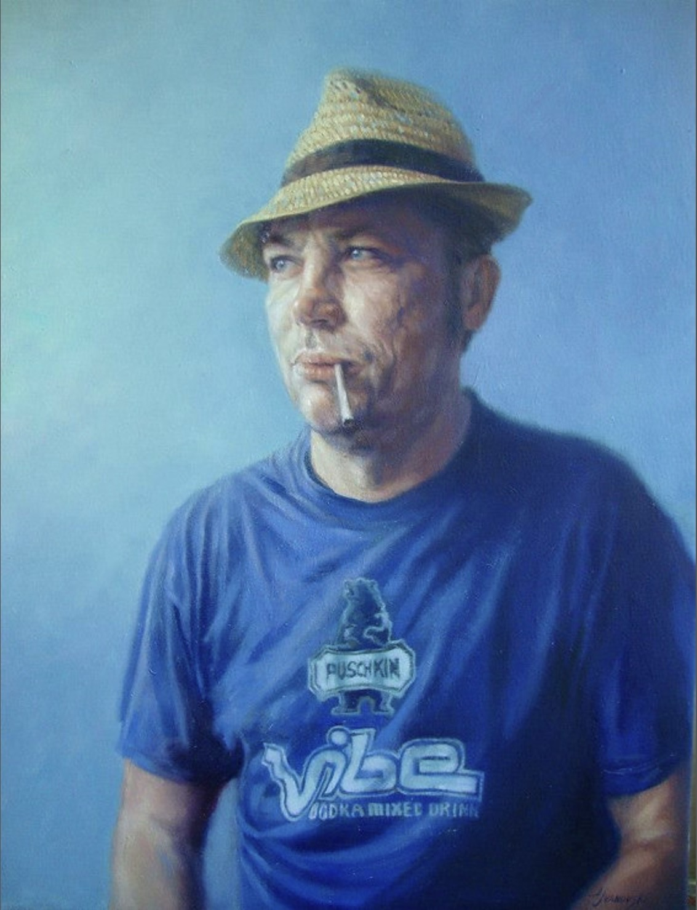

Exploring human relationships, psychological drama, and classical lighting inspired by European cinema and old masters.
“Alexander Ivanovski sees compositions as the main statements of his pictorial ideas. They have a number of characteristics that express their monumentality: impressively large format, conscious compositional planning, transcendence of pictorial stories. Just as symphonies are milestones in a composer's career, Alexander Ivanovski's multifaceted works represent the culmination of his artistic vision at any given moment.”





Alexander Ivanovski was born on November 16, 1972, in Karaganda, Kazakhstan. His formal artistic instruction began at a local art school in Karaganda (1983–1988), followed by higher education at the College of Art, Design and Creation in Krasnoturjinsk, Russia (1988–1992). He went on to study at the Art Academy of St. Petersburg from 1992 to 1994. In 1999, Ivanovski relocated to Germany with his family. He enrolled at the Academy of Fine Arts in Nuremberg studying free painting under Professor Christine Sack-Colditz, achieving Master Student distinction in 2004 and completing his degree in 2005.
Ivanovski’s work focuses strictly on figurative representation and human relations, explicitly rejecting abstract or purely landscape painting. He draws technical influence from Old Dutch Masters—particularly their use of light—and structural inspiration from cinematic storytellers such as Luchino Visconti, Ingmar Bergman, and Andrei Tarkovsky. His large-format compositions are heavily planned, functioning like staged film stills that portray themes of interpersonal tension, gender dynamics, and narrative conflict.
Ivanovski currently lives and works in Fürth, Germany. Over the past two decades, his work has been showcased widely across Europe and internationally, including exhibitions in Shenzhen (China), Skopje (Macedonia), Perugia (Italy), and Córdoba (Spain). He remains a frequent contributor to regional cultural institutions, including the Kunsthaus Nürnberg, the Künstlerbund Schwabach, and Kulturring C in Fürth.
Explore the newest collection series featuring frontier narratives and dynamic compositions.
Explore the latest collection series featuring unique narrative compositions.
Explore the portraits collection featuring intimate character studies and expressive framing.
Structured private sessions and ateliers available for aspiring artists of all ages—focusing on visual storytelling, foundational form, and lighting.
Encouraging spatial imagination and drawing fundamentals through engaging projects.
Deep dive into figurative accuracy, dramatic setups, and layered storytelling.
Review by Birgit Ruf on the Kunstpreis-schau exhibition, detailing cinematic framing and themes.
Coverage of local exhibition and regional art milestones.
Catalog and monograph compilation covering key creative years.
Feature on paintings showcased in Fürth exploring themes of time and luxury.
Video report and visual walk-through highlighting the regional Gastspiel art showcase.
Public discussion and press regarding municipal artwork acquisitions and exhibitions.
Critique and commentary covering the Kunstpreis entries and exhibitions.
Official artist registry and historical exhibition listings with Künstlerbund Schwabach.
Detailed exhibition program brochure featuring works and cultural events.
Official promotional flyer outlining the regional art trail exhibition.